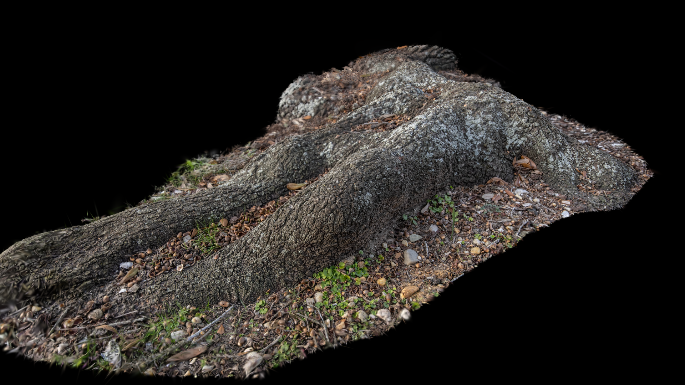
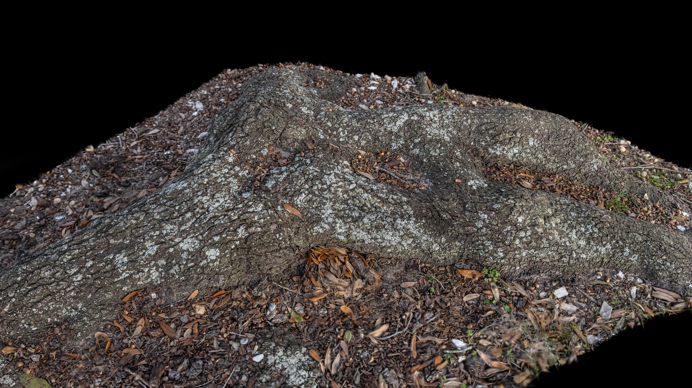
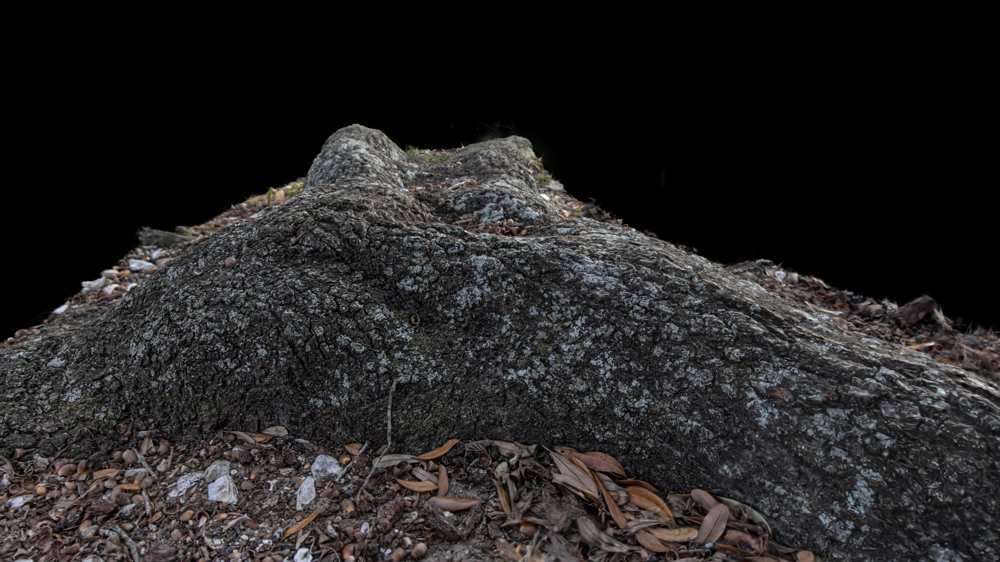
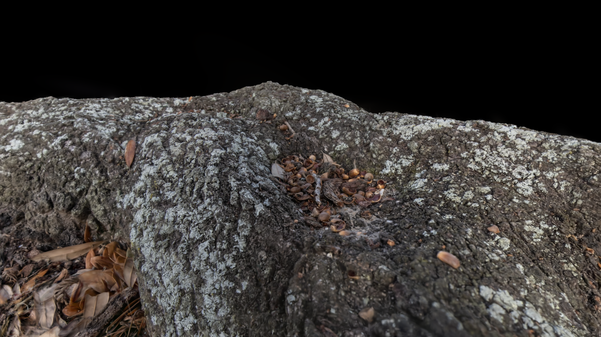

Itim Kongsakulvatnasook
Home
Demo Reel
Portfolio
The Marble Temple
Chocolate Shop
Water Drop Automaton
AI Style Transfer Tools
Matching Elements of Mood
WinterScatter Tool
Arnold Settings Capture Tool
The Silent Helper
The Woodland Grave
Blog
Resume
Contact
Week 06 - Final Project Ideation | GSplat Research and Testing
08 - 15 Feb 2026
Gaussian Splat Asset Creation
Tree Root




Notes
340 Photos
Might not suitable for close up shot